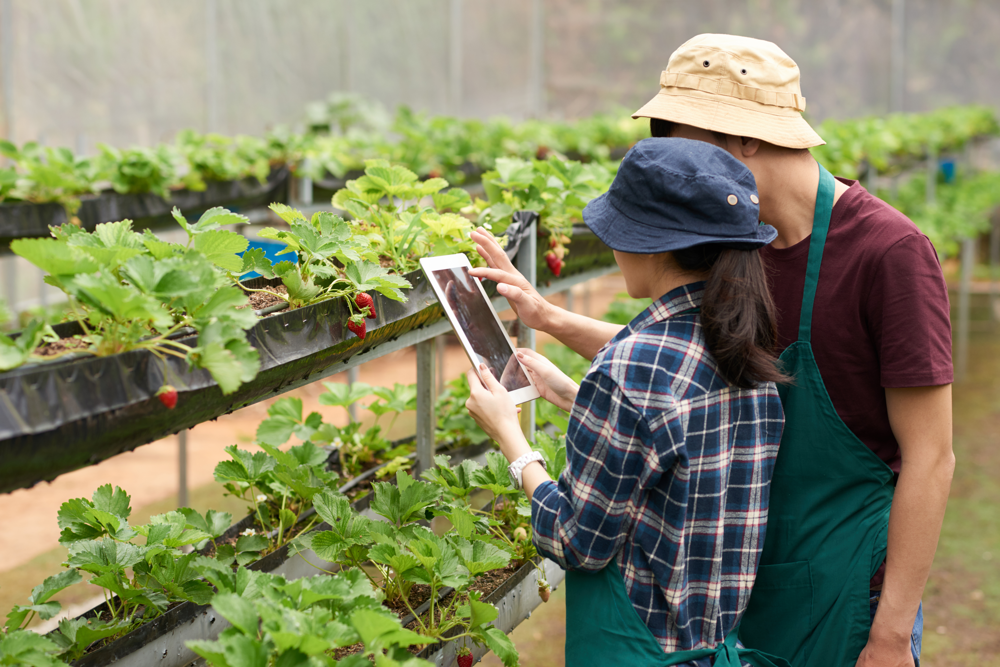
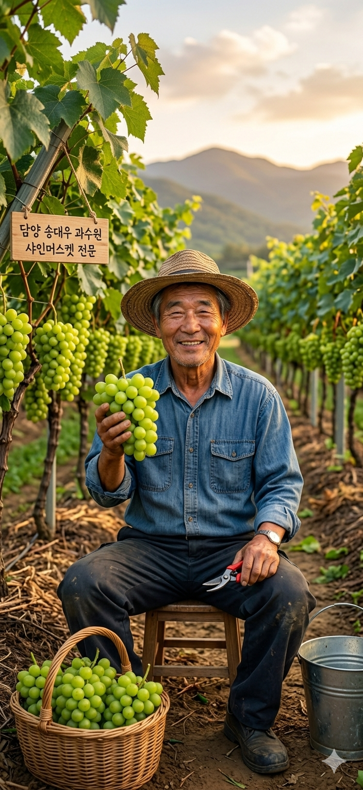
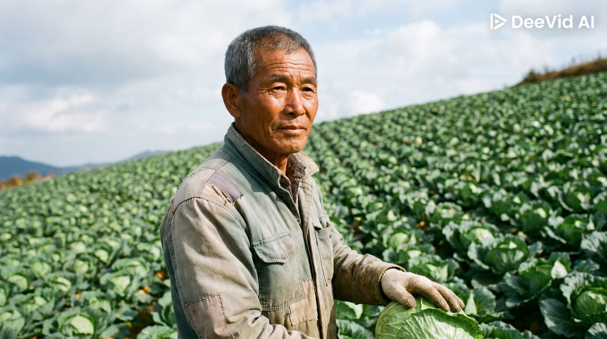
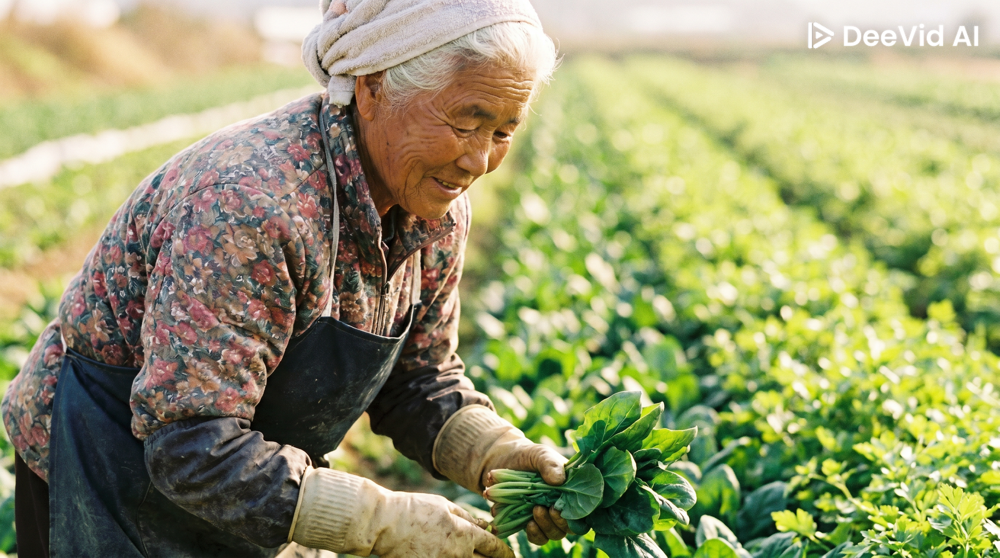
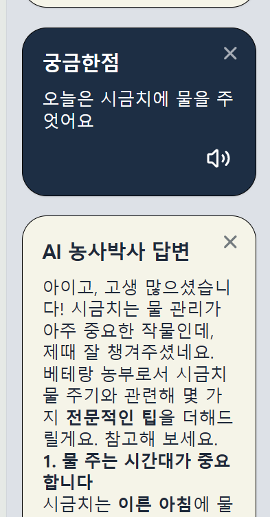
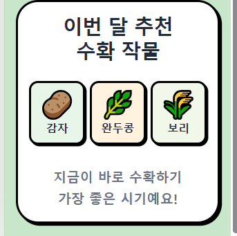
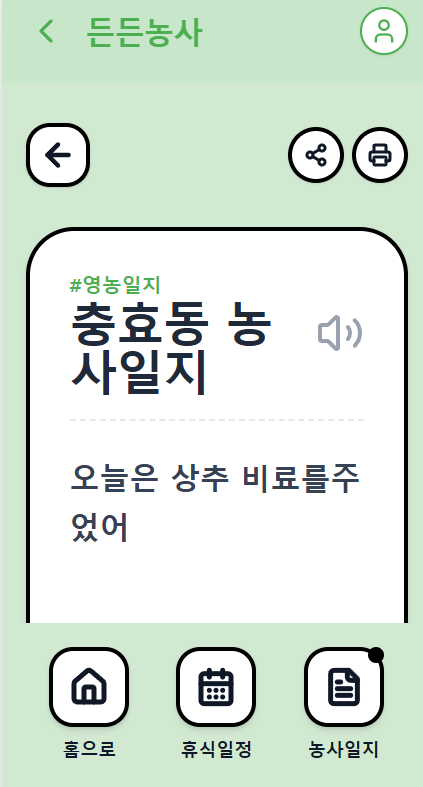
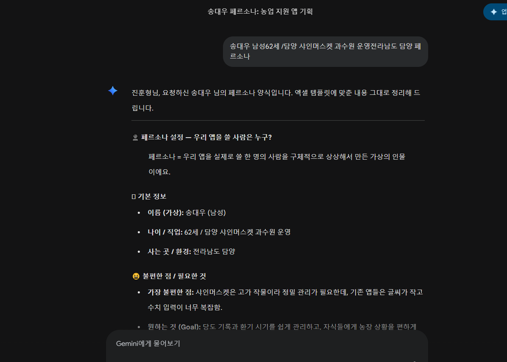
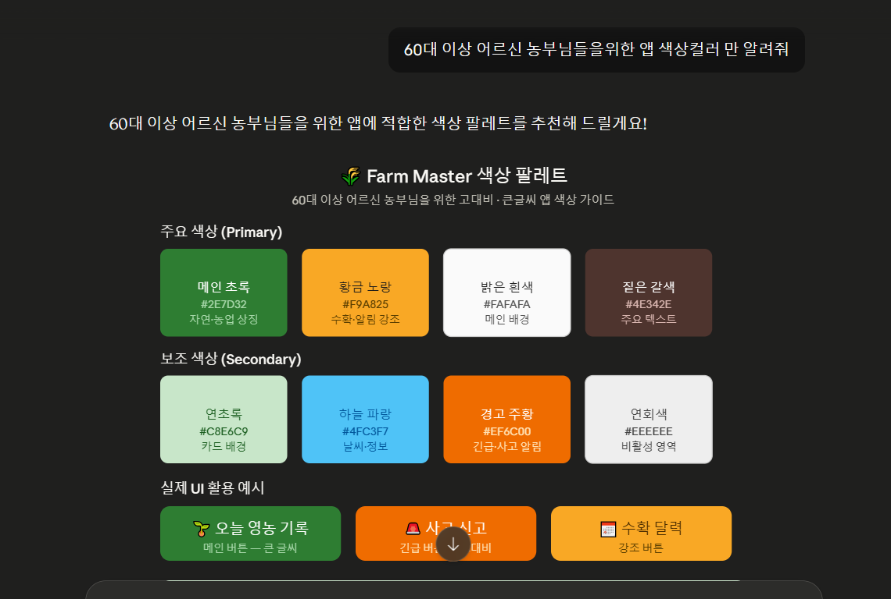

문제 해결
사용자의 진짜 불편함을 발견하고, 디지털 소외 계층까지 배려하는 따뜻한 서비스를 설계합니다.

Hello, I'm
AI와 함께 성장하는 Product Manager
Gemini · Claude Code · Google AI Studio AI 활용
저를 소개합니다
사용자의 진짜 불편함을 발견하고, 디지털 소외 계층까지 배려하는 따뜻한 서비스를 설계합니다.
Gemini, Claude 등 최신 멀티 AI 엔진을 기획 파트너로 적극 활용하여 비즈니스 가설 검증, 페르소나 설계, 와이어프레임 구조화의 생산성을 극대화합니다
새로운 기술과 도구를 빠르게 습득하며, AI 시대에 필요한 UI/UX 기획으로 성장 중입니다.
제가 만나고 싶은 사용자들의 이야기

전라남도 담양 · 사인어스갯 과수원 운영
사인어스갯의 고지 작업이 너무 많은 영향, 관리가 필요한데, 기존 앱들은 글씨가 작고 수치 명칭이 너무 복잡함.
단순하게 기록하고 읽기 쉽게 관리하고, 자식에게 농장 상황을 편리하게 공유하고 싶음.
"아들과 자부심을 높이고 자식과 소통하고 싶은 스마트 시니어 농부"

강원도 태백 (고원지역)
매일 변하는 고산지대 날씨에 그에 따른 배추 영농 시기를 예측하기 어려움.
복잡한 조작 없이 오늘 꼭 해야 할 농작업(주기, 약치기 등)을 바로 확인하는 것.
"복잡한 건 싫고, 오늘 내 밭에 필요한 일만 알려주면 바라는 베테랑 농부"

시금치 · 미나리 밭농사 · 전라남도 장흥
나이로 인해 씨를 무엇을 심었고 어떤 비료를 얹었는지 기억이 가물거림.
내 농사 기록이 자동으로 남아 나중에 다시 참고할 수 있는 것.
"기록은 어렵지만, 내 소중한 농사 경험을 쉽게 남기고 싶은 할머니"
든든농사 — My App Planning
말 한마디로 기록하고 큰 글씨로 관리하는 어르신 맞춤형 스마트 영농 파트너
해결할 문제 : 기존 스마트팜 앱의 글씨가 너무 작고 메뉴가 복잡하여 어르신들이 사용하기 어렵고, 매일 써야 하는 영농일지 기록이 육체적으로 번거로움.
차별점 : 음성 인식 기반 영농 일지와 '초간편 모드 UI'를 통해 스마트폰 조작 부담을 획기적으로 줄임.
스마트폰 사용은 익숙하지만 정밀한 조작은 불편한 60~85세 베테랑 농부
키보드 입력 없이 "오늘 비료 줬다"라고 말하면 AI가 시간과 내용을 자동으로 기록하는 음성 농업 AI 시스템
모든 버튼과 글씨를 일반 앱보다 1.5배 크게 배치하고, "오늘 날씨 좋음", "물 줄 시간" 등 직관적인 한글 안내
이번달의 수확시기를 알려줘 정확한 수확시기를 알려줌
어르신들의 디지털 소외 현상 해결, 정확한 영농 기록 축적으로 고품질 작물 생산, 국가 공공 농업 데이터 확보 기여.

궁금한거 ai와 이야기하는 중입니다

ai가 이번달 수확하기 좋은작물을 알려주고있습니다

공유일지로 가족들과의 소통 및 협업농업을 할수있습니다

GEMINI와 페르소나 기획

Claude와 색상컨셉 기획 이에대한색상컨셉 참고 어울릴만한 색상선택
AI 도구를 어떻게 활용했는가
아이디어 발산 & 시장 조사
디자인컨셉 & 색상컨셉
코드작성 & 테스트
Gemini로 기획 검증
Claude Code코드로
색상컨셉잡기,Figma 디자인
Google AI Studio로 구현
스스로 검토 & 학습
함께 일하고 싶습니다